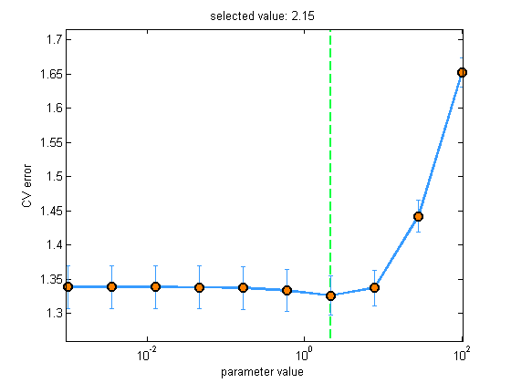

Basic test of syntacttic correctness of linregFit()
Contents
load servo
lossFn = @(y, yhat)mean((y-yhat).^2);
Basic OLS
model = linregFit(Xtrain, ytrain, 'preproc', struct('standardizeX', false));
yhat = linregPredict(model, Xtest);
[ytrain, ybar] = centerCols(ytrain);
w = Xtrain \ ytrain;
w0 = ybar - mean(Xtrain)*w;
assert(isequal(w, model.w));
assert(isequal(w0, model.w0));
CV over default lambda (L2)
[model, lambdas, mu, se] = linregFit(Xtrain, ytrain, 'regType', 'L2', 'plotCv', true);
yhat = linregPredict(model, Xtest);
mse = lossFn(yhat, ytest)
set(gca, 'xscale', 'log');
w = linregFitL2QR(mkUnitVariance(centerCols(Xtrain)),centerCols(ytrain), model.lambda);
assert(isequal(model.w, w));
mse =
3.1823

Kernels
sigma = 1;
preproc = struct('kernelFn', @(X1,X2) kernelRbfSigma(X1,X2,sigma));
model = linregFit(Xtrain, ytrain, 'preproc', preproc);
yhat = linregPredict(model, Xtest);
CV over specified lambda (L1)
model = linregFit(Xtrain, ytrain, 'regType', 'L1', 'lambda', 0.5:0.5:4);
yhat = linregPredict(model, Xtest);